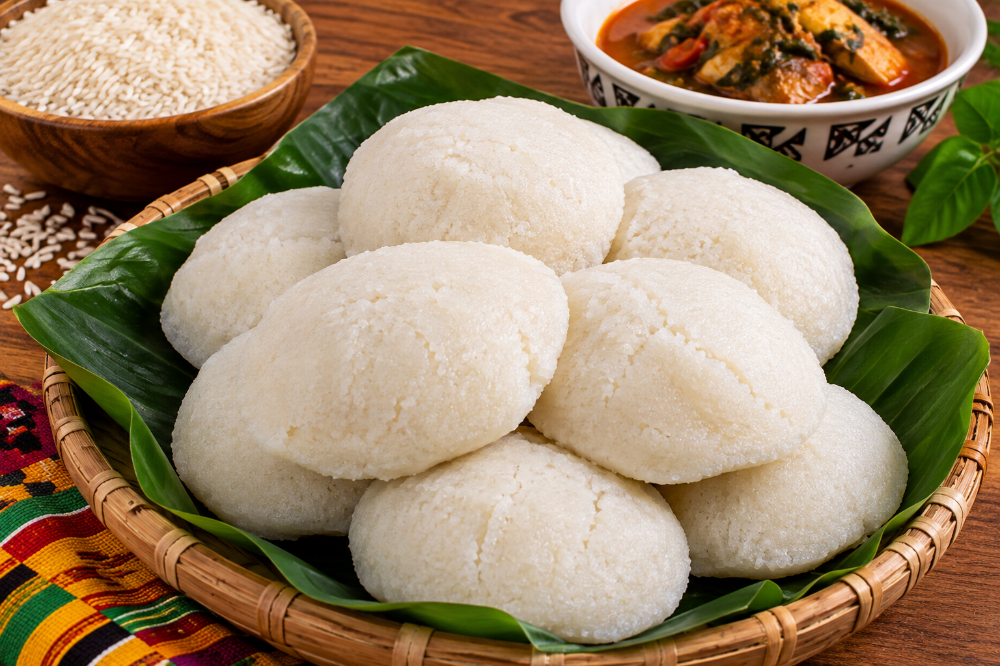

Ablo 🇹🇬
L'Ablo est une spécialité très appréciée au Togo. Cette préparation à base de farine de riz est douce, légère et légèrement sucrée.

🛒 Ingrédients
- 500 g de farine de riz
- 100 g de farine de maïs
- Sucre
- Levure
- Eau tiède
- Une pincée de sel
👩🏽🍳 Préparation
- Mélanger les farines dans un grand récipient.
- Ajouter progressivement l'eau tiède et mélanger jusqu'à obtenir une pâte homogène.
- Ajouter la levure, le sucre et une pincée de sel.
- Couvrir la pâte et laisser reposer quelques heures.
- Verser la pâte dans les petits moules.
- Faire cuire à la vapeur jusqu'à ce que les Ablo soient bien gonflés et cuits.
💡 Petit conseil
L'Ablo peut être dégusté avec une sauce tomate, une sauce pimentée, du poisson ou de la viande. C'est un accompagnement très apprécié dans la cuisine togolaise.